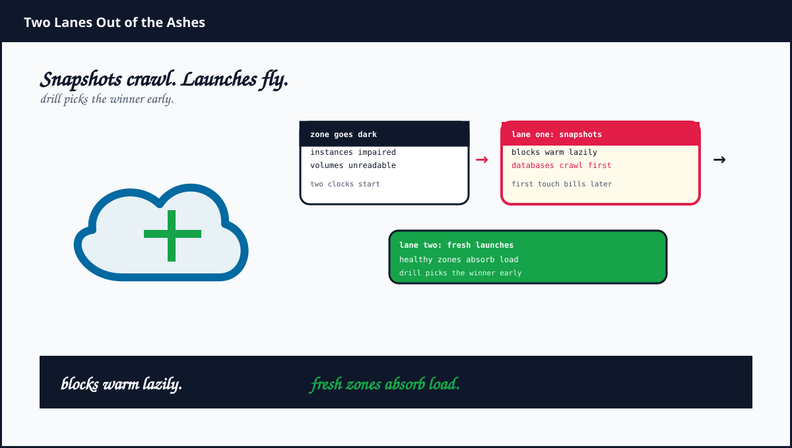

1. The Hottest Zone in Virginia
On May 7, 2026, a thermal event caused a loss of power at one facility in AWS's US-EAST-1 use1-az4 Availability Zone. AWS reported impaired EC2 instances and degraded EBS volumes. This was a facility-level event inside a single Availability Zone, not a claim that every resource in the zone or region failed.
AWS listed nine impacted services: EC2, EBS, Redshift, SageMaker, ElastiCache, IoT Core, EKS, NAT Gateway and OpenSearch. The AWS Health event records a staged recovery. Coinbase's June 1 postmortem says its trading disruption and recovery extended well beyond the initial provider event because its matching engine and Kafka infrastructure had separate recovery problems.
2. Why Heat Beats Software
A physical event changes the recovery question from “is the code healthy?” to “which resources can still be reached?” Availability Zones reduce shared-fate risk, but the provider's label does not prove that an application's data, control paths or dependencies can recover from an impaired facility.
AWS advised customers to use unaffected Availability Zones and restore from EBS snapshots where needed. Those are different recovery paths. A snapshot provides a recovery point. A fresh launch provides compute capacity. Neither proves that an application can meet its recovery-time objective until the full sequence has been rehearsed.
EBS volumes restored from snapshots can incur first-read initialization work. Test representative volume sizes and access patterns, then measure time to useful service. Do not infer a restoration duration from volume size alone. Throughput, initialization behavior, instance limits, quotas and the workload all matter.
A multi-AZ deployment does not have one universal two-times price. The cost depends on standby capacity, replication mode, data transfer, managed-service pricing and how much traffic is active in each zone. A defensible comparison needs your own bill plus the cost of tested recovery. Public reporting does not establish Coinbase's incident loss or prove a universal return-on-investment figure.
4. What Went Wrong in the Design
Single-AZ deployment treated as temporary. Temporary single-zone architectures have a way of becoming permanent. Every quarter they survive feels like validation. Then a thermal event collects the debt with interest. Zones are the unit of failure. Deploying to one zone is deploying to one point of failure.
Snapshots existed but recovery was unrehearsed. Most teams back up. Few restore on a schedule. An untested snapshot is a rumor of safety. Restore drills expose the real numbers: throughput limits, first-touch latency, ordering constraints plus the three manual steps the runbook forgot.
Service-level labels did not replace dependency mapping. AWS listed nine affected services. Customers still need to know whether a particular resource, control path or workload depends on the affected facility. Managed-service placement and recovery behavior vary by product.
Failover needed humans at machine speed. Guidance said relaunch in healthy zones. Relaunching stateful systems means promotion decisions, DNS changes, plus consistency checks. Manual failover during an active incident is slow plus error-prone. Automation rehearsed quarterly beats heroics performed never.

5. What Should Happen Instead
First, identify the failure domains of critical resources and choose an alternate-zone design that matches their recovery objectives. Active-active can reduce cold-start dependence, but it still needs tested state replication, traffic steering and capacity headroom. Active-passive needs a measured promotion path. Neither is a universal cost answer.
Second, drill snapshot restores on a schedule. Restore a representative data tier into an isolated environment. Measure time to useful service, block-warmup behavior and application consistency under representative queries. Record the recovery-time objective and actual restore cost.
Third, map every managed service to its zones. Inventory which AZ each dependency occupies. Alert when a single zone hosts a critical path without a tested alternate. The map takes an afternoon. The incident it prevents takes a quarter to explain.
Fourth, automate promotion and traffic shifts where the system supports it. Database failover, DNS updates and health-gated rollouts should have an observable runbook plus a tested rollback. Rehearse zone evacuation without assuming automation eliminates operator decisions.
Fifth, keep launch capacity warm elsewhere. Relaunching in healthy zones assumes capacity plus quotas plus AMIs exist there. Pre-warm machine images, reserve quota headroom, plus keep infrastructure code deployable to every zone by default. Recovery should be a command, not a project.
6. The Verdict
AWS communicated clearly within the limits of an active incident. The status language was precise. The guidance was correct. Restore plus relaunch is genuinely the right advice. The uncomfortable part is that the advice only works for customers who prepared. The cloud gives you zones. Using one of them is a choice. Thursday priced that choice in public.
Coinbase's postmortem is a useful companion because it separates the provider's thermal event from its own matching-engine and Kafka recovery issues. The operational lesson is broader than snapshots: rehearse both provider-level failure and application-level recovery, then price the actual alternatives using your own workload and rates.
Cooling failed. Power followed. The snapshot was the only server that stayed cool.
Sources and Method
AWS Health is the source for the affected zone, service list and recovery recommendations. Coinbase's first-party postmortem documents the exchange's failure and recovery timeline. CRN provides independent coverage. This revision removes unsupported zone-cost and outage-return claims. The recommendations are analysis for readers to test against their own workloads.